ch7: 반응 메커니즘, 생화학 경로, 생물반응과 생물반응기
The next best thing to knowing something is knowing where to find it.
---------------------------------------------------
앞 장에서 보았듯이 화공에서 다루는 대부분의 반응(약 70%)는 비가역 0차 1차 2차반응이다.
30%는 가역반응이거나, 복잡한 차수를 가진 반응이다. 예를 들어 다음 속도식을 보자.
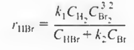
이건 기초반응(0차, 1차, 2차)를 따르지 않음을 알 수 있다. 그렇다면 어떻게 이런 속도식이 나오는 걸까?
일단 이 속도식은 실험을 통해 측정된 속도식이다. 이 후 왜 이런 식이 나오는지를 분석을 통해 알아볼 수 있다. 그것은 바로 활성 중간체의 개념을 도입하여 설명할 수 있다.
활성중간체란 반응 중간에 생기지만 매우 빠르게 없어지는 분자를 의미한다. 따라서 활성중간체는 사실상 농도가 0에 가깝게 순간적으로만 존재하며, 이 활성중간체가 변하여 생성물이 된다.
반응물 -> 활성중간체 -> 생성물
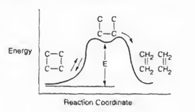
따라서 기초반응이 아닌 모든 복잡한 속도식은, 중간에 여러 기초반응과 활성중간체를 거쳐 형성되어 만들어진다고 볼 수 있다.
이 활성 중간체의 성질은 알짜 생성속도가 0이라는 것이다. 실제로는 0이 아니지만 매우 극소량 존재하고 만들어지자마자 바로 분해되거나 반응하기 때문이다. 따라서 생성속도는 0과 유사하다고 볼 수 있고, 이를 유사 정상상태 가정(PSSH)라고 한다.
이 두 개의 개념을 이용하여 복잡한 속도식이 주어졌을 때, 반응의 메커니즘을 규명할 수 있다.
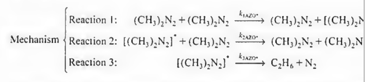
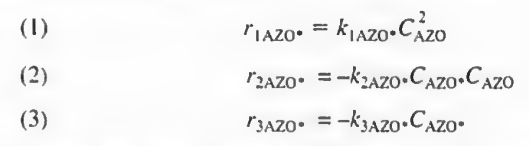
메커니즘을 위와 같이 가정한다. 일단 가정 후 속도식을 유도해보고 아니면 다시 식을 수정해야 한다.
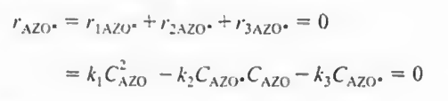
활성중간체의 생성속도식을 쓰고 PSSH (r=0)을 적용한다.
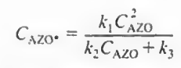
활성중간체의 농도가 나온다.
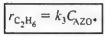
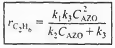
결과물의 속도식에 대입한다. 이후 -ra=rb 등 속도간의 관계를 이용하여 각 물질의 속도식을 만들 수 있다.
실험식과 비슷하다면 메커니즘은 맞는 것이다.
반응 메커니즘을 탐색하는 경험법칙이 존재한다.
1. 속도식의 분모에 농도로 나타나는 성분들은 대개 활성중간체와 충돌한다. 즉
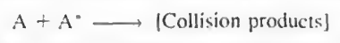
2.분모에 상수항이 있으면 반응단계 중 하나는 대개 활성중간체의 자발적 분해 단계이다.
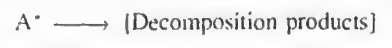
3.분자에 농도로 나타나는 성분은 반응단계들 중의 한 단계에서는 활성중간체를 형성한다.
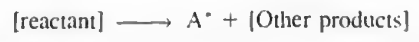
예를 들어 다음식을 생각해보자.
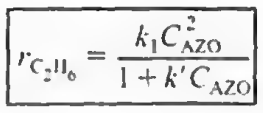
1. 분모에 농도로 나타나는 AZO는 활성중간체와 충돌할 것이다.
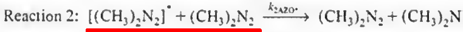
2. 분모에 상수항 1이 있으므로 반응단계 중 하나는 활성중간체 AZO*의 자발적 분해단계일 것이다.
3.분자에 농도로 나타나는 성분은 활성중간체를 형성한다.
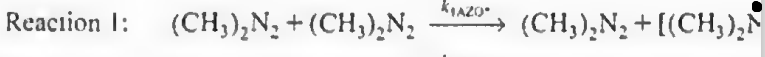
농도의 제곱이므로 2개가 붙어서 하나는 활성중간체 형성한다고 가정한다.
이러한 경험법칙을 이용하여 속도식이 주어졌을 때 메커니즘을 추론할 수 있다.
메커니즘 추론단계
1.활성중간체를 가정한다.
2.기초반응과 활성중간체로 구성된 반응들을 순서로 배열한 모델을 제시한다.
3.원하는 생성물의 속도식과 활성 중간체의 속도식을 쓴다.
4.PSSH를 사용하여 중간체의 농도식을 구한다.
5. 3의 원하는 생성물의 속도식에 있는 중간체의 농도를 제거한다.
6.만약 유도된 속도식이 결과와 일치하지 않는다면 경험법칙을 통해 새로운 반응모델을 만들어라. 또는 중간체를 새로 가정해라.
이제 PSSH의 하나의 응용 중 하나인 생물반응을 살펴보자. 사실 이건 활성중간체와 PSSH의 연습에 불과하기 때문에, 유도를 한번만 해보고 결과만 정리하면 된다.
7.2: 효소반응 개론
효소는 생명체 내에서 작용하는 촉매로 생체촉매라고 부른다. 생물 내에서 일어나는 화학 반응의 속도를 높이고, 특정반응을 유도하는 역할을 한다.
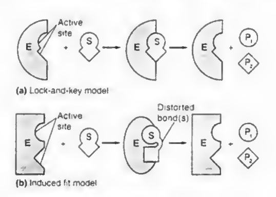
작동원리는 예전에는 자물쇠모델 (효소는 가만히 있고 기질S가 딱 붙어서 복합체 형성 후 생성물로 분해)였지만 최근에는 유도적합모델이 맞는 것으로 알려졌다. 여기서 효소와 기질은 모두 붙을 때 잠시 변형한다.
효소의 예시
- 아밀라아제 (Amylase):
- 용도: 녹말(전분)을 포도당으로 분해하는 효소입니다. 주로 침과 췌장에서 분비되며 소화 과정에서 중요한 역할을 합니다.
- 응용 분야: 식품 산업에서 녹말을 분해해 단맛을 내는 시럽을 만드는 데 사용됩니다.
- 프로테아제 (Protease):
- 용도: 단백질을 아미노산으로 분해하는 효소입니다. 위에서 분비되는 펩신(pepsin)이나 췌장에서 분비되는 트립신(trypsin)이 대표적입니다.
- 응용 분야: 세제 산업에서 단백질 오염물을 제거하는 데 사용되며, 고기를 부드럽게 만드는 연육제에도 사용됩니다.
- 리파아제 (Lipase):
- 용도: 지방을 지방산과 글리세롤로 분해하는 효소입니다. 주로 소장에서 지방을 소화하는 역할을 합니다.
- 응용 분야: 세제 산업에서 지방 오염물을 제거하는 데 사용되며, 식품 제조에서 치즈나 버터의 풍미를 내는 데도 쓰입니다.
- 락타아제 (Lactase):
- 용도: 유당(락토스)을 포도당과 갈락토오스로 분해하는 효소입니다. 유당을 소화하기 어려운 사람들(유당 불내증)이 유제품을 섭취할 수 있도록 도와줍니다.
- 응용 분야: 유당 제거 우유나 유제품을 만드는 데 사용됩니다.
효소는 다음과 같이 S에 붙어 중간체를 만들고, 이 중간체가 분리되어 결과물을 만든다.
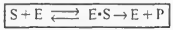
따라서 여기에 활성중간체와 PSSH를 넣어 속도식을 유도할 수 있다.
보통 대부분의 효소는 다음과 같은 반응을 따르며 여기서 PSSH를 통해 마이클리스 멘텐식을 유도할 수 있다. (단순한 단일 기질-단일 생성물 반응은 대부분 마이클리스-멘텐식을 따릅니다. 그러나 복잡한 반응(예: 알로스테릭 효소, 다중 기질 반응, 조절 메커니즘이 관여된 반응)은 마이클리스-멘텐식을 따르지 않을 가능성이 큽니다. 이러한 경우는 약 20-30% 정도를 차지할 수 있습니다.)
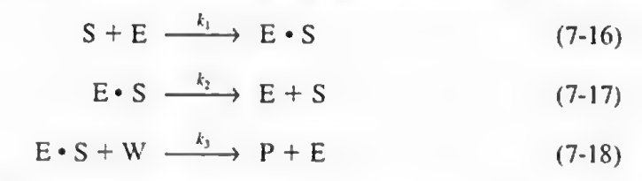 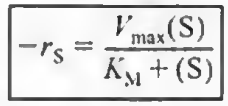
유도식은 생략하고 마이클리스 멘텐식은 위와 같으며, 미지수로 Vmax와 Km이 있다.
: 최대 반응 속도 (효소가 포화 상태일 때의 속도)
: 미하엘리스 상수 (기질 농도가 반응 속도의 절반 Vmax/2에 도달할 때의 기질 농도)
이때 보통 라인위버-버크 도시를 통해 두 미지수를 구한다. 라인위버 버크 도시는 기질 농도에 따른 반응속도를 측정한 후 이를 도시하는 그래프이다.
이러한 마이클리스 멘텐 반응에 억제반응이 추가될 경우, 마이클리스 멘텐식은 약간 변화한다.
1)경쟁억제: 기질 I가 E와 경쟁하여 S에 붙는다.
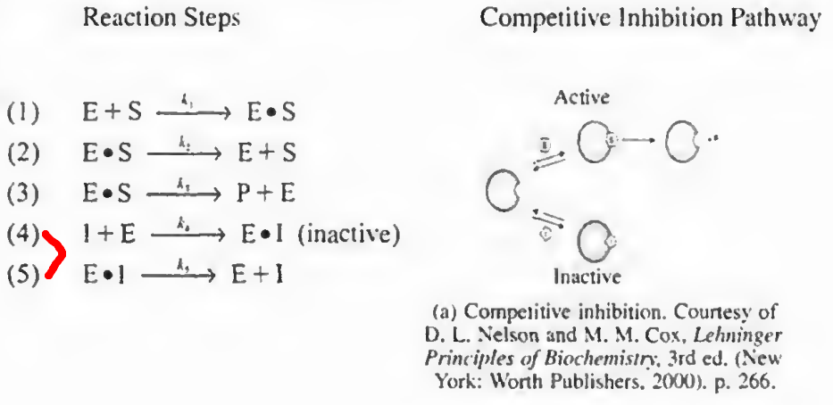
기존 마이클리스-멘텐 메커니즘에서 4 5단계가 추가되며, 이때 반응식은 다음과 같다.
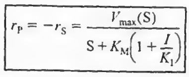 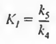
2)무경쟁억제: I가 E랑 경쟁해서 S에 붙지는 않는다. 느긋한 친구로 ES복합체가 형성되고 나면 그때 붙는다.
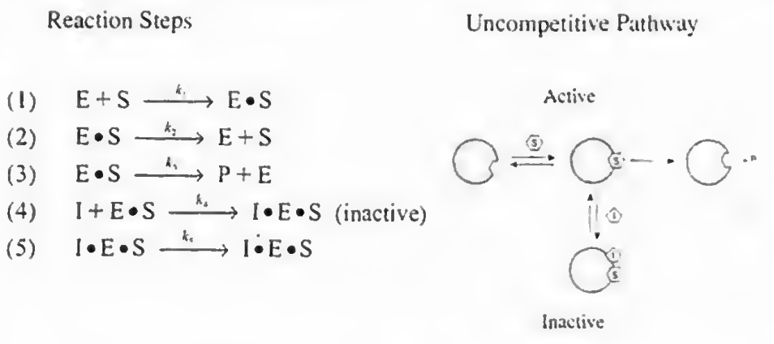
이때도 4 5단계가 추가되며 이때 반응식을 PSSH로 유도하면
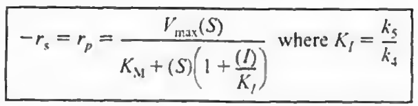
3)혼합억제: 경쟁억제 무경쟁억제가 혼합된 케이스이다.
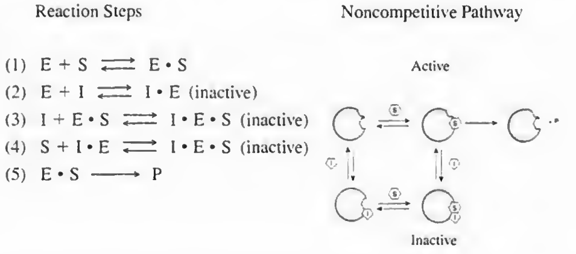
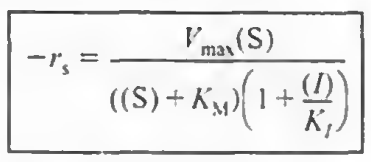
효소 반응속도론
-억제 중에 추가로 기질억제가 존재하는데, 이는 기질이 많을 경우 ES복합체에 S가 달라붙어 SES 비활성 분자가 생성되는 것이다. 이로 인해 일반적으로는 반응물인 기질S가 많을 수록 반응속도가 빨라져야 정상이지만 효소 반응의 경우 너무 기질이 많아버리면 SES 비활성체의 생성도 가속화되어 결과적으로 속도가 줄어들게 된다.
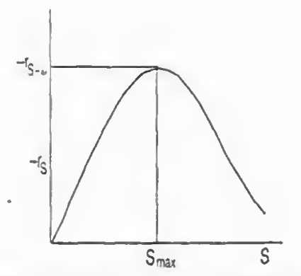
따라서 기질 억제가 존재하면 반응속도와 전화율을 최대화하기 위해 반회분 반응기로 S를 추가로 넣어주는 식으로 운용한다.
-온도의 경우 효소는 온도가 올라가면 변형되기 때문에, 일부분은 온도가 올라가면 속도가 증가하겠지만 너무 올라가면 변형되어 속도가 줄어든다.
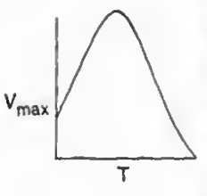
요약: 이 장의 주요 내용은 활성 중간체와 PSSH 개념을 이용해 복잡한 속도식을 유도하는 과정이다. 효소 반응 속도론에서 Michaelis-Menten 식과 억제식을 PSSH를 통해 유도할 수 있다. 추가로 기질억제와 효소의 온도 민감성이 효소의 반응속도에 미치는 영향도 알아봤다.